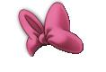

De: La Frikipedia, la enciclopedia extremadamente seria.
De: La Frikipedia, la enciclopedia extremadamente seria. De: La Frikipedia, la enciclopedia extremadamente seria.
Espectro del arcoiris utilizado por los emos y los gays.
Cuando surgió el mundo, de algo llamado el Badabín Badabán, surguieron muchos agujeros negros... pero uno de ellos se dio cuenta que era diferente a los demás. Él no era un triste oscuro, que le gustase dedicarse exclusivamente a absorber cosas en el cosmos... a él le gustaba escuchar canciones de madonna, dar paseos con otros agujeros de sexo masculino... y pensó: "¿Por qué seguir siendo negro? En la creación hay muchos colores...". Y como era un agujero negro con super poderes, se convirtió en un agujero color fucsia super mono, fino y elegante que convertía a todo lo que absorbía en objetos bonitos y adorables de este color.
Este maravilloso color se puede encontrar en:
Los especímenes hembra lo ponen en todas partes. Se puede apreciar en:
Los especímenes de sexo masculino también utilizan este color, por muy asombroso y dañino para la vista que resulte...
Tanto machos como hembras de este tipo lo utilizan, aunque con más frecuencia lo hacen los "machos". Utilizan este color para:
Las féminas lo utilizan para todo tipo de ropa, pero evidentemente, utilizan una variante super cantosa, sobre todo en chandals, convinado siempre con otros colores también cantosos, en prendas ceñidas que marquen bien los michelines.
Algunos machos cabrios canis están empezando a utilizar este color, intentando asemejarsea los metrosexuales, que a su vez intentan asemejarse a los afeminados. Evidentemente, los canis lo hacen de una forma bastante cutre, utilizándolo para gorras o camisetas de manga corta.
Este tipo de persona lo son los que lo utilizan con mayor... "estilo". No lo suelen mezclar muy cantosamente ni utilizarlo demasiado. Pero (y siempre hay un pero) los degeneradores de esta gente (es decir, los que no ligan ni aunque lo intenten e intentan parecer metrosexuales para aumentar su "sexapil") lo utilizan desastrosamente, ofendiendo al agujero fucsia super mono.
Es su color favorito, porque es super bonito y refleja sus sentimientos. Lo utilizan para todo lo que puedan pero no en exceso, en prendas de bastante reclamo sexual.
| Imagen | Sujeto o Cosa |
|---|---|
|  | Señor lacito rosa |
| La pantera rosa | |
| Señor/a super emo divino/a de la muerte | |
| Señorita pija de los pelos | |
| Señor nube de algodón |
| | ||||
|
Materia
Magnitudes
Mecánica
Cinética y Dinámica
Energía
Óptica
Termodinámica
Física Cuántica y Nuclear
Científicos
|
Autor(es):